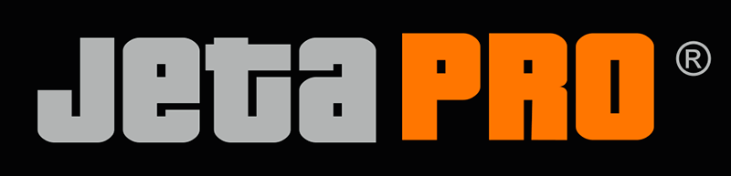
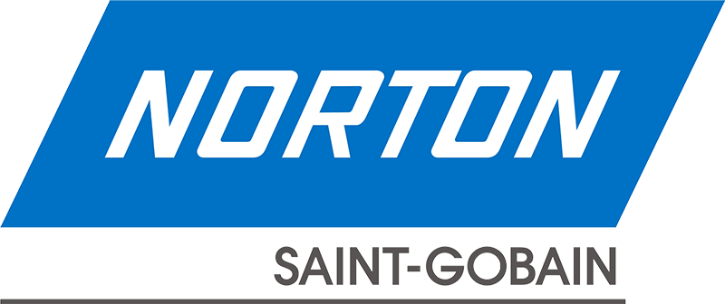

1. Профессиональный сервис
Отличный результат при проведении ремонта автомобиля не возможен без профессионального оборудования. Мастерская АМРОС располагает всеми необходимыми условиями для проведения качественного ремонта. В ремонтных боксах поддерживаются оптимальные условия для выполнения качественного профессионального ремонта, а наличие специализированной окрасочной камеры обеспечит безупречное лакокрасочное покрытие.
Окрасочная камера
Окрасочная камера позволяет создать специальные условия при окраске и сушке автомобиля, которые обеспечат качественное и долговечное покрытие, стойкий блеск и экологичность проведения лакокрасочных работ:
- очистка воздуха от частичек пыли - позволит избежать попадания инородных частиц, которые могут испортить внешний вид покрытия
- оптимальная температура - пониженная при окраске автомобиля и повышенная при сушке;
- циркуляция воздуха - для равномерной сушки автомобиля;
- экологичность процесса окраски автомобиля - система очищающих фильтров и рециркуляции отработанного воздуха позволяет снизить количество выбросов в камере.
2. Высококлассные материалы
Чтобы быть уверенными в качестве своей работы, специалисты мастерской АМРОС используют материалы проверенных фирм-изготовителей. Для ремонта кузова и покраски авто используются грунты, лаки и шпатлевки бренда JETA PRO, абразивные материалы марок MIRKA и NORTON.
Jeta Pro
 Jeta Pro - бренд, уделяющий особенное внимание контролю за качеством выпускаемой продукции и внедрением инновационных технологий. Материалы JETA PRO обеспечивают высокий уровень на каждом этапе ремонтных работ благодаря широкой линейке выпускаемой продукции:
- шпатлевки, разработанные с учетом особенностей различных материалов и видов работ; обеспечивают гарантию лучшего результата;
- грунты: кислотные, эпоксидные, акриловые и другие; идеальное основание для превосходного внешнего вида лакокрасочного покрытия;
- лаки для создания покрытия, устойчивого к физическому и химическому воздействию;
- полная линейка укрывных и защитных материалов для кузова и салона авто для получения точного и чистого результата.
Mirka
Уникальные материалы фирмы Mirka производятся в Финляндии и используются специалистами по ремонту авто в 80 странах мира, что говорит о мировом признании качества и инноваций. Многофункциональные и классические абразивные материалы подходят для работы с любым материалом на различных этапах проведения кузовного ремонта и покраски авто.
Norton
 Компания Norton ведет свою историю с 1909 года с первого завода по изготовлению шлифовальных кругов серийного производства. Накопленные знания и опыт позволяют удовлетворить потребность специалистов авторемонта не только в абразивных материалах, но в расходных материалах для подготовки автомобиля к покраске. Продукция компании Norton сертифицирована на соответствие стандарту ISO 9002, а сама компания полностью выполняет рекомендации Европейской федерации производителей абразивов (FEPA).